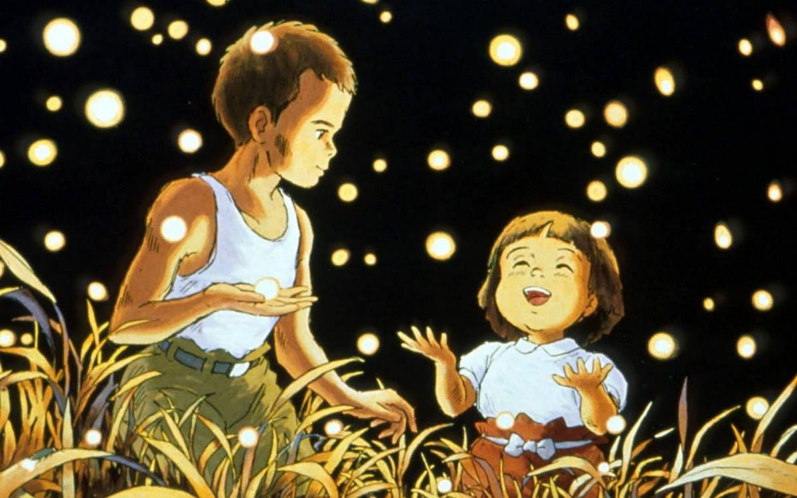

☆Gênero: Animação/ Drama/ Guerra
☆lançamento: 24/11/1989
☆diretor(a): Hayao Miyazaki
☆Studio: Studio Ghibli
☆classificação indicativa: +12
☆Duração: 1h 29mn
avaliação:★★★★☆(4,6)
Sinopse
"Túmulo dos Vagalumes" é um filme de animação japonês que acompanha os irmãos Setsuko e Seita durante a Segunda Guerra Mundial. Após perderem a mãe em um bombardeio americano e com o pai convocado para a guerra, eles lutam contra a fome e as doenças, vivendo em um abrigo isolado na floresta. A história é baseada no conto homônimo de Akiyuki Nosaka.